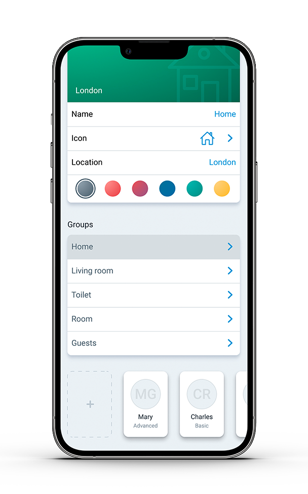

Airzone Cloud App
Besplatna Airzone Cloud aplikacija dodaje nove funkcije vašem klimatizacionom uređaju:
- Kreiranje više korisnika sa različitim nivoima kontrole.
-
 Definisanje rasporeda i klima scena.
Definisanje rasporeda i klima scena.
- Profesionalno praćenje putem Airtools sekcije.
- Glasovno upravljanje sa Amazon Alexa, Google Home ili Samsung Smart Things.